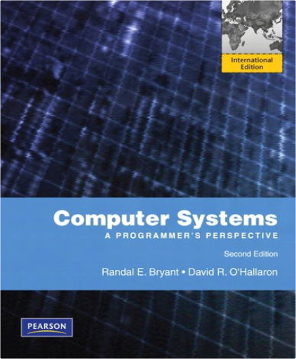
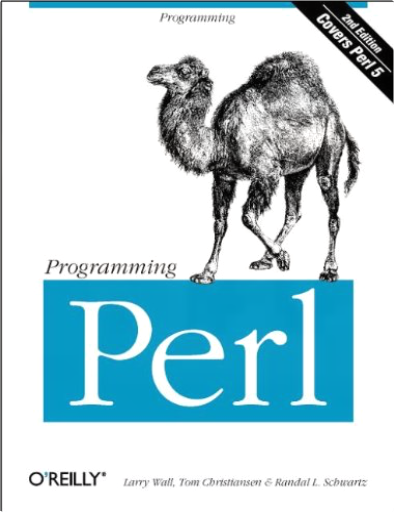

Computer Systems: A Programmer's Perspective: International EditionRandal E. Bryant, David R. O'Hallaron  For Computer Systems, Computer Organization and Architecture courses in CS, EE, and ECE departments.Few students studying computer science or computer engineering will ever have the opportunity to build a computer system. On the other hand, most students will be required to use and program computers on a near daily basis. Computer Systems: A Programmer's Perspective introduces the important and enduring concepts that underlie computer systems by showing how these ideas affect the correctness, performance, and utility of application programs. The text's hands-on approach (including a comprehensive set of labs) helps students understand the "under-the-hood" operation of a modern computer system and prepares them for future courses in systems topics such as compilers, computer architecture, operating systems, and networking.Visit the CSS:AP web page http://csapp.cs.cmu.edu for more information and resources. Programming PerlTom Christiansen, Randal L. Schwartz, Larry Wall Programming Perl, 2nd Edition is the authoritative guide to Perl version 5, the scripting utility that has established itself as the programming tool of choice for the World Wide Web, UNIX system administration, and a vast range of other applications. Version 5 of Perl includes object-oriented programming facilities. The book is coauthored by Larry Wall, the creator of Perl.Perl is a language for easily manipulating text, files, and processes. It provides a more concise and readable way to do many jobs that were formerly accomplished (with difficulty) by programming with C or one of the shells. Perl is likely to be available wherever you choose to work. And if it isn't, you can get it and install it easily and free of charge.This heavily revised second edition of Programming Perl contains a full explanation of the features in Perl version 5.003. Contents include: An introduction to PerlExplanations of the language and its syntaxPerl functionsPerl library modulesThe use of references in PerlHow to use Perl's object-oriented featuresInvocation options for Perl itself, and also for the utilities that come with PerlOther oddments: debugging, common mistakes, efficiency, programming style, distribution and installation of Perl, Perl poetry, and so on. Our Sexuality (9th Edition) with CD-RomRobert L. Crooks Book DescriptionThe most authoritative college textbook available on human sexuality, this new edition of Crooks and Baur's OUR SEXUALITY has been thoroughly and carefully updated to reflect the most current research literature. Sensitive, comprehensive, and candid scholars and teachers, the authors continue to engage students with the most exciting, emerging research in the field. The authors have further refined their focus on strengthening healthy communication among partners, as well as their overall coverage on maintaining a responsible and healthy sexual relationship. They have also given even greater attention to diversity and inclusiveness. Other highlights include the very latest research, including anew feature called "Spotlight on Research;" new stories about the experiences of real people from the "Authors' Files;" and a writing style that is warm, direct, and non-judgmental. As always, thorough coverage of all major topics is incorporated into every section (including sexual health). The result is a timely new edition that retains and builds upon all of the strengths that have made it the best-selling book in the market.This book does not include a Cd.  Addison-Wesley's Java Backpack Reference GuidePeter DePasquale Addison-Wesley's Java Backpack Reference GuidePeter DePasquale A quick reference to Java's most frequently used keywords and APIs. Provides information for someone who just wants the specifics of Java.Integrates syntax examples, keyword descriptions, and programming tips in a way that will make it the must-have reference.For a reader who wants a reference and specifics of Java in one handy place. The American Heritage Dictionary: Second College EditionEditors of The American Heritage Dictionaries Photographs, drawings, maps, and usage notes supplement the central and related meanings of English words including current terms in business, science, technology, and the arts  Elements of Network Protocol DesignMohamed G. Gouda Elements of Network Protocol DesignMohamed G. Gouda While we are all becoming familiar with the Internet, which uses the Transfer Control Protocol/Internet Protocol (TCP/IP), more and more additions and changes emerge every year, including protocols that support multimedia, encryption, and other methods of secure data transfer. This book focuses on the design and implementation of these computer network information transfer protocols. Using the Internet as a running case study throughout the book, the authors introduce a formal notation for writing network protocols and organize their discussion around protocol functions. A Writer's ReferenceDiana Hacker 0-312-40161-2 DIANA HACKER 4TH EDITION BEDFORD/St. MARTIN'S 1999 424 PAGES  Wired Style: Principles of English Usage in the Digital AgeConstance Hale, Wired Wired Style: Principles of English Usage in the Digital AgeConstance Hale, Wired Wired magazine's top editors have weighed thousands of new terms, phrases, idioms, and usages of the language since the advent of the global village. Elements of Style is no longer sufficient as a guide to English usage—Wired America needs Wired Style.  Data Communications, Computer Networks, and Open SystemsF. Halsall Data Communications, Computer Networks, and Open SystemsF. Halsall Drawing on his twenty years as a researcher and teacher, Fred Halsall presents the complex world of data communications and networks with clarity and thoroughness. An invaluable resource to both the student and the practicing computer professional, this fourth edition of the very successful Data Communications, Computer Networks and Open Systems has been extensively updated to reflect the rapid developments in this field.  Statistics ExplainedPerry R. Hinton Statistics ExplainedPerry R. Hinton Statistics Explained is an accessible introduction to statistical concepts and ideas. It makes few assumptions about the reader’s statistical knowledge, carefully explaining each step of the analysis and the logic behind it. The book:  Applied Cryptography and Network Security: Third International Conference, ACNS 2005, New York, NY, USA, June 7-10, 2005, ProceedingsJohn Ioannidis, Angelos D. Keromytis, Moti Yung Applied Cryptography and Network Security: Third International Conference, ACNS 2005, New York, NY, USA, June 7-10, 2005, ProceedingsJohn Ioannidis, Angelos D. Keromytis, Moti Yung The 3rd International Conference on Applied Cryptography and Network Security (ACNS 2005) was sponsored and organized by ICISA (the International Commu- cations and Information Security Association). It was held at Columbia University in New York, USA, June 7–10, 2005. This conference proceedings volume contains papers presented in the academic/research track. ACNS covers a large number of research areas that have been gaining importance in recent years due to the development of the Internet, wireless communication and the increased global exposure of computing resources. The papers in this volume are representative of the state of the art in security and cryptography research, worldwide. The Program Committee of the conference received a total of 158 submissions from all over the world, of which 35 submissions were selected for presentation at the a- demic track. In addition to this track, the conference also hosted a technical/ industrial/ short papers track whose presentations were also carefully selected from among the submissions. All submissions were reviewed by experts in the relevant areas. |

 Made with Delicious Library
Made with Delicious Library